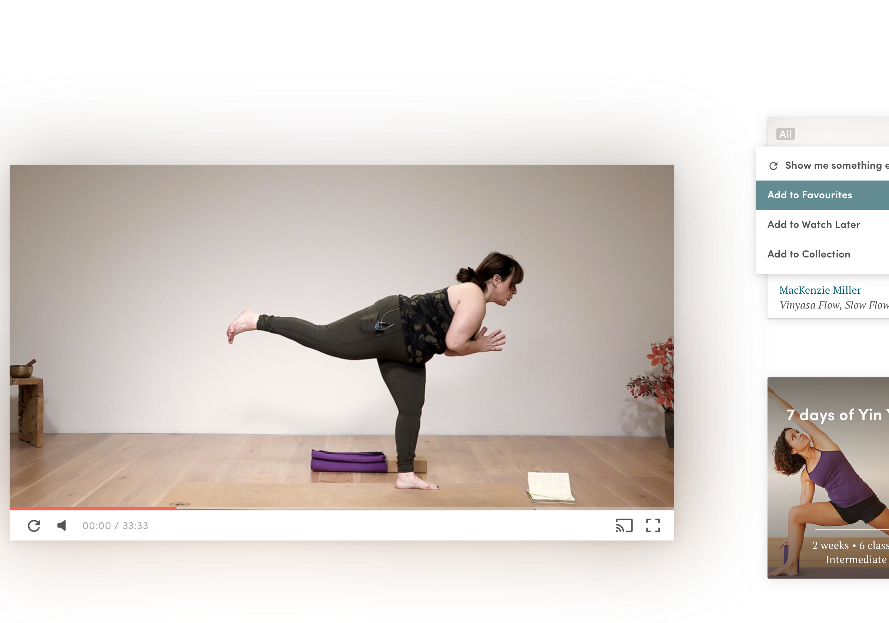
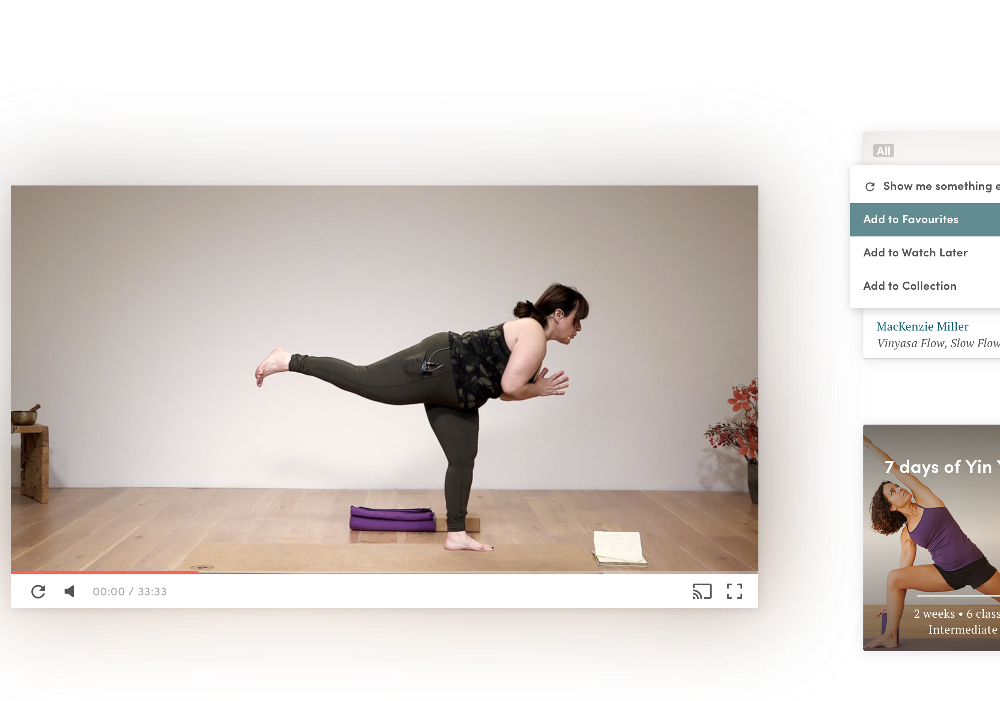
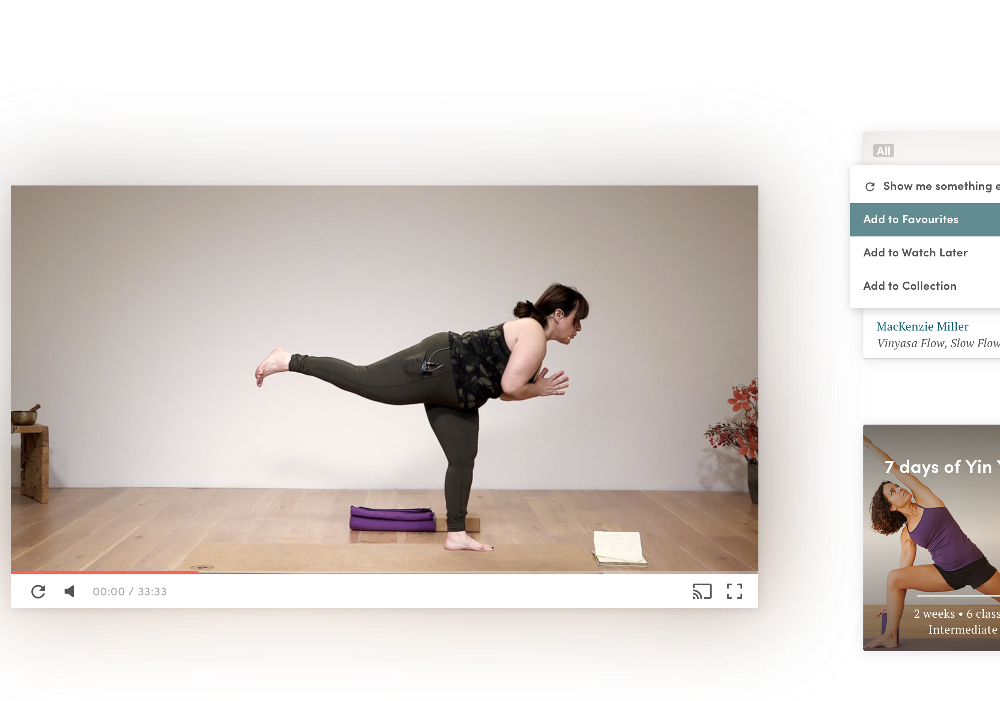

- Werkzaamheden
- User Experience
- Visual Design
- Mobile, Web and App
- Product Design
- Prototyping
- Mailchimp

Frismedia is vanaf het begin van EkhartYoga de digitale partner geweest en voor de derde versie van het platform betekende dit een complete redesign. Op basis van een nieuwe huisstijl hebben we het platform voorzien van nieuwe functies, een cleaner en lichter design en een verbeterde gebruikservaring.
Ik was verantwoordelijk voor de gehele User Experience en Visual & User Interface Design fase. Hierbij lag de focus op het opzetten van een design systeem, een nieuwe onboarding, verbeterd dashboard en een betere scheiding tussen Marketing en Product pagina's.
Het was een interessante ervaring om samen te werken met de lieve mensen bij EkhartYoga en te verdiepen in een onderwerp en business om het platform te laten groeien.